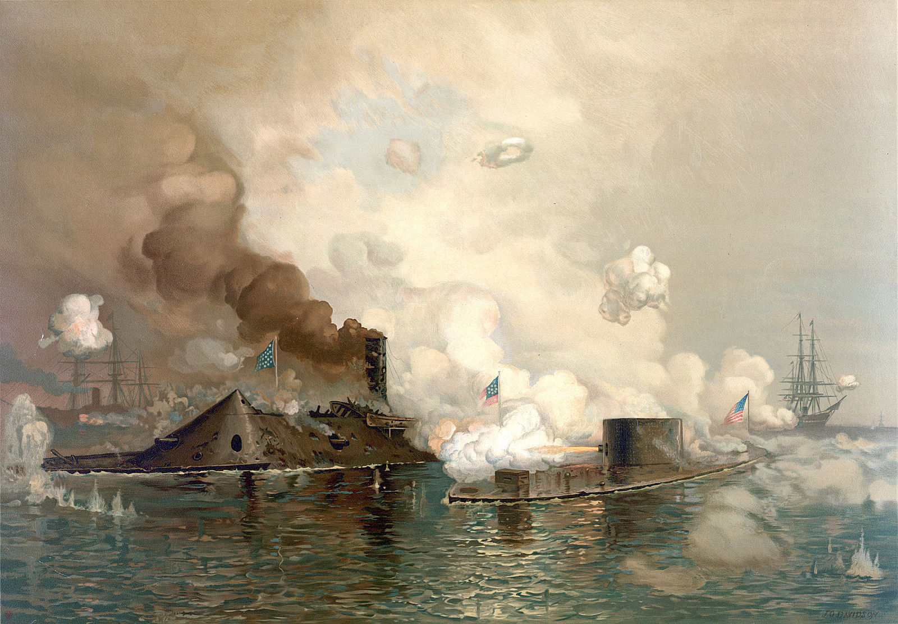

В прошлом выпуске мы рассказали про морскую блокаду, самоуверенность северян и дипломатические войны между США и Европой. А также намекнули, что проблему блокады дикси собрались решать нестандартно, на что янки с максимальной срочностью готовили увесистый контраргумент.

Как уже писалось ранее, ввиду печальной ситуации с промышленностью Конфедерации при постройке своего чудо-корабля пришлось несладко. Броню водному монстру пришлось делать из прокатанных рельс — других источников нормальной стали не нашлось. Зато пушек понаставили с избытком — чтоб всем хватило. Так как крушить планировалось старомодные деревянные фрегаты, бронебойных снарядов на водоплавающий агрегат не завезли, предпочли взять побольше разрывных, чтоб от блокады только щепки в разные стороны летели. На всякий случай еще прикрутили к форштевню таран. Ну всякое бывает же, а ну как ближний бой завяжется?
В отличие от уже созданных к тому времени европейских правильных броненосцев, конструкторы с Юга предпочли не старый проверенный дизайн, к которому все привыкли, а соорудили свой бронекорпус, то ли в расчете на моральное подавление, то ли просчитав баллистику орудий потенциального противника. Постарались сделать так, чтобы основная часть корабля скрывалась под водой, а наружу высовывался только бронированный каземат. Получилось что-то отдаленно напоминавшее хищный плавающий утюг. Даже по нынешним временам зрелище то еще. Назвали это дело красивым именем «Вирджиния».
Утром 8 марта, за 48 лет до назначения этой даты женским праздником, на глазах у изумленной публики, собравшейся на палубах и у орудий северных кораблей, на рейд гавани Норфолка медленно выползло черное пыхтящее нечто. Янки в целом знали, что южане там что-то недоброе замыслили и творят свой оружейный шедевр, но одно дело примерно представлять, как должен выглядеть броненосец, и совершенно другое — с распахнутой челюстью наблюдать, как под конфедератским флагом на тебя ползет неведомая жуткая машинерия. В то время даже Жюль Верн еще не начал издаваться, не говоря уж об Уэллсе, поэтому блокирующая эскадра оказалась совершенно не готова к такому нашествию марсиан.
Три фрегата из северного флота, оценив очертания бронированного мастодонта, предпочли с ним вообще не связываться и начали отходить, пока не началось. Скорость, взятая при отступлении, была избыточна, свалить подальше от коптящего воплощения стимпанка хотелось очень сильно — в общем, все три сели на мель. Среди них был паровой фрегат под названием «Миннесота», остальные нам менее интересны.
У флота США, не считая всякой мелочи, осталось два нормальных боевых корабля, которые, перекрестившись и помолясь, все же решили пострелять по вражьему чуду техники.
Несмотря на успешные попадания, черное чудовище перло дальше, прямо на врага. Брони создатели «Вирджинии» заложили с запасом, чтоб точно хватило. Правда, про скорость при этом пришлось забыть. Капитаны «Конгресса» и «Камберленда», потея, наблюдали, как неуязвимый монстр ме-е-е-е-едленно, как старый бык в анекдоте, подползает к ним, а все выпущенные ядра просто рикошетят от толстого слоя стали и лишь царапают краску.
Первой «коровой из стада» стал «Камберленд». Командующий «Вирджинией» рассудил, что тормозить и маневрировать, чтоб вдарить хотя бы с половины стволов, он на этой тяжеленной дуре будет весь день, поэтому тупо и без затей въехал в северный шлюп. Вот и таран сразу пригодился. Корабль США, в который с грацией неторопливого носорога вошло 4100 тонн, хрустнул, надломился и поспешил к ближайшей суше — на дне которая. Пока он полностью не затонул, «Камберленд» еще продолжал куда-то стрелять, но без особого эффекта — видимого ущерба Утюгу Смерти это не причиняло.
Значительно неприятней для «Вирджинии» было то, что таран заклинило в останках тонущего шлюпа, который вознамерился героически утянуть броненосец за собой. Вообще-то у «Вирджинии» не то чтобы не было проблем с плавучестью — в океан, например, ее вообще выпускать было нельзя, поэтому вундершип действительно едва не ушел на дно вслед за первым фрагом. Но повезло, выкрутились, правда, таран отломился.
Капитан «Конгресса», ошалело наблюдая происходившее и подсчитывая потери в уме (150 человек, включая раненых) принял единственно верное решение — не подпускать этот адский агрегат близко — и сам выбросился на мелководье, куда чугуниевая лохань физически бы не доползла. Немедленно выяснилось, что адское нечто умеет не только таранить, но и стрелять. Равно как и подошедшие на расправу корабли из другой южной эскадры.
Где-то час фрегат США держался под превосходящим огнем противника, а затем запросил пощады. В принципе, без нужды добивать его никто не хотел, но тут подсуропили береговые батареи Севера — как раз во время начала эвакуации моряков с разваливающегося корабля они ударили по южной эскадре. Дикси, естественно, обиделись, и, будучи не в силах что-либо сделать с батареями, вжарили по «Конгрессу». В прямом смысле этого слова — раскаленными ядрами. Деревянный корабль вспыхнул и горел еще долго (пока огонь до пороховой камеры не добрался). Плюс 110 зарубок на броне «Вирджинии».
Броненосец все же не был неуязвим — ему наделали дырок в дымовых трубах, сломали пару пушек и убили двух моряков, но это не шло ни в какое сравнение с тотальным оверкиллом, устроенным демоническим пепелацем.
Удостоверившись, что «Конгресс» выбыл из активной деятельности, южный флагман неторопливо развернулся (радиус разворота — более полутора километров) и пошел смотреть, кто еще остался на закуску. Экипаж «Миннесоты», до того момента надеявшийся, что про него благополучно забыли, потерпел полное крушение иллюзий.
Однако янки повезло. Начался отлив и металлическое чудовище не стало рисковать и щекотать дном свое брюхо. Прикинув, что при спавшей воде недобитки из США точно никуда не денутся, эскадра Конфедерации отошла в порт — починиться по мелочи и дождаться утра.
В Вашингтоне случилась паника. Узнав вести с морей, кабинет министров устроил экстренное совещание. Особенно там отличился военный министр, истошно визжавший, что пока мы тут сидим, южное чудовище уже ползет вверх по Потомаку и сейчас будет нас бомбить!!11 Сюжет про Годзиллу, перемалывающую столицу, пришел в голову американцам явно раньше японцев. Насилу успокоили, объяснив главному по военным делам, что «Вирджиния» при всем желании не пролезет в речку, поэтому можно выползать из-под стола уже и таки вести себя достойно. К тому же, как загадочно добавили осведомленные люди — у Севера есть, чем ответить.
Тем временем чудо-корабль США успел добраться до рейда у Норфолка и встал на защиту «Миннесоты». Шведский изобретатель, обещавший Линкольну нечто невиданное, не соврал — его броненосец действительно тяжело было увидеть. У «Монитора», как его назвали, выступали из воды всего две части: вращающаяся (!) орудийная башня и мелкая рубка для капитана. Всё. Остальное было упрятано под воду. Видимость оставляла желать много лучшего, да и при плохой погоде броненосец начинал буквально захлебываться, черпая воду всеми возможными технологическими отверстиями, включая основание башни, но плавать это могло. А еще могло стрелять, причем довольно успешно — все-таки поворачивающаяся башня была действительно новым словом в науке и технике. Орудий на «Мониторе» всего 2, но оба крупнокалиберные, знатной мощи. Один нюанс — согласно инструкции, пороха при выстреле нужно было использовать поменьше, иначе могли произойти неприятности. То есть, снаряды-то были могучие, а вот начальная скорость их — сильно так себе.
Когда утром 9 марта «Вирджиния» вернулась добивать северян, ее капитан сперва не понял, что это за байда у него прямо по курсу образовалась. То ли бакен какой, то ли бочка, то ли котел с «Миннесоты» вчера сорвало, а они в запарке не заметили… Пока южный офицер рассматривал непонятное, неведомая диковина раскочегарила машины и зафырчала в его сторону, попутно разворачивая башню с двумя очень неприятными дулами.
Попытки как-то уконтрапупить разумный бакен успехом не увенчались — он же мелкий, из воды еле выступает, хрен попадешь. Подойдя почти в упор, «Монитор» выдал залп по «Вирджинии». Грохнуло знатно, гудело долго. Толку не было — ядра отскочили. Дикси ответили тем же — с таким же результатом. Ловкие северяне сразу после выстрела отворачивали башню в другую сторону, чтобы ничего ненароком не залетело в орудийные порты, и фугасные (взятые для деревяшек) снаряды бесполезно и бессмысленно стучали по чугунию.
Воскресная схватка двух йокодзун продолжалась долго и нудно. «Монитор» вертелся вокруг противника, лупася по его броне. «Вирджиния», у которой башни не было, пыталась выцелить супостата через узкие орудийные порты, бесполезно грохоча всей артиллерией. В какой-то момент Север пошел на таран и лишь чудом разминулся с Югом, зато все же пробил броню. Оказалось впрочем, что рачительные дикси под толстым слоем брони навесили еще более толстый слой дерева — ядра увязли.
Устав от лютой бессмысленности происходящего, капитан КША плюнул, приказал забить на всякую железную мелочь и пошел добивать «Миннесоту», экипаж которой все это время сидел на трибунах и болел за своих. И опять не получилось. «Вирджиния» начала увязать на мелководье и могла вообще застрять там навсегда — еле-еле удалось сохранить хоть какую-то маневренность, отойти из опасной зоны и предпринять последнюю попытку разобраться с наглой вражеской мелюзгой — протаранить ее нафиг.
Не вышло. Хоть южный броненосец каким-то чудом смог поймать носом (без тарана) противника, а озверевшая от метаний и гула в ушах абордажная команда уже была готова высадиться на палубу «Монитора», едва видневшуюся в волнах, юркий флагман США вышел из клинча, болезненно вдарил по «Вирджинии» с максимально близкой дистанции и… неожиданно уплыл куда-то вдаль.
Дикси проводили ненавистного вражину офонаревшим взглядом, поздравили друг друга с победой (правда, непонятно как добытой) и очень неторопливо, чтобы не развалиться окончательно, начали перестраиваться для обстрела «Миннесоты», закономерно приунывшей на своей мели.
А вот хрен там. Иногда они возвращаются. У «Монитора» тупо кончились боеприпасы в башне, а перегружать их из погреба лучше было без свидетелей. Перезарядившись, Давид вернулся к Голиафу к немалой фрустрации последнего.
Катавасия началась снова, но наконец-то один из снарядов «Вирджинии» попал куда надо — в ту самую рубку, откуда за происходящим внимательно следил капитан «Монитора». Пробить броню не пробило, но осколками и ошметками металла, отлетевшими при взрыве, офицера США ослепило, причем весьма радикальным образом. «Монитор» встал, подождал какое-то время, а потом дал задний ход.
«Ну наконец-то», — выдохнули дикси. Потом на всякий случай подождали — а ну как снова вылезет неугомонный? Затем посмотрели на недобитую, но уже отчаявшуюся «Миннесоту», поглядели на снова начинавшийся отлив, будь он неладен, оценили повреждения корабля, который в течение нескольких часов обстукивали крупнокалиберной кувалдой, и повернули в порт на ремонт. Враг-то все равно никуда не делся бы, а такой корабль у КША был один.
Так два наисовременнейших корабля провели день в бесполезной битве и не добились по большей части ничего. Причем если тактический расклад был явно в пользу Юга — один перечень потерь у противника чего стоит! — то стратегический остался за Севером — блокада-то никуда не делась.
Собственно, именно это и рассказали жителям газеты обеих сторон. И США, и КША громогласно заявили о своей полной победе, тактично умолчав о некоторых аспектах сражения. Что характерно, матча-реванша так и не сложилось. На «Вирджинию» поставили бронебойные снаряды, и «Монитор» перестрелки уже не очень хотел, предпочитая отсиживаться у своих береговых батарей, а южане совсем не горели желанием подползать к ним на дистанцию выстрела.
Какое-то время сам факт наличия у КША столь могучего корабля доставлял серьезные неудобства генералам янки — флот толком не мог развернуть активных действий, пока у дикси в загашнике имелся такой крокодил, но более развитая промышленность со временем взяла свое — США-то могли клепать броненосцы в количестве.
Дальнейшая судьба двух чудо-кораблей бесславна. «Вирджиния» была со слезами на глазах подожжена и взорвана при отступлении, чтобы не досталась врагу, «Монитор» же погиб еще глупее — в конце 1862 года в шторм нахлебался воды и камнем ушел на дно.
И раз уж мы говорим про 1862 год, самое время посмотреть, а что же происходит на суше.
Об этом — в следующих выпусках.